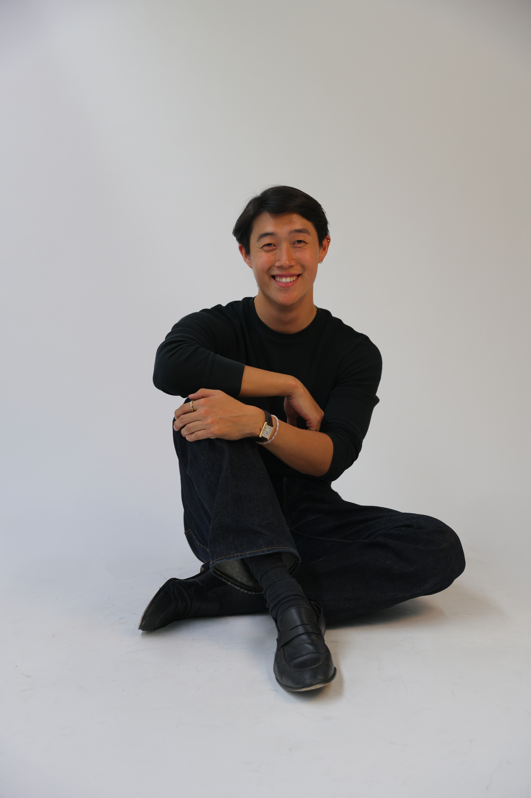

I grew up thinking about clothes the way most people think about language — as something quietly expressive, full of signals we send without saying a word. That curiosity led me to design, to biology, to business, and eventually to Stanford, where I've been trying to understand all three at once.
My work lives at the intersection of material culture and systems thinking. I care about where things come from, what they come to mean, and what happens when they change hands. That sounds abstract — but in practice, it means I've sewn garments, pitched biotech investors, built logistics software, and spent a summer inside a luxury conglomerate asking very similar questions in very different rooms.
I'm not sure what the next chapter looks like yet. I know it involves fashion, sustainability, and the strange social power of objects. I'm still figuring out the rest.

Biodesign Challenge — Finalist
Kerra was selected as a finalist and exhibited at the Museum of Modern Art in New York — one of the world's most prestigious platforms for biotechnology and design. The project explored keratin-based textile alternatives to petroleum-derived synthetics.

Innovation Transfer Grant — TomKat Center
Received $50,000 in funding through the TomKat Center's Innovation Transfer Program, which assists Stanford faculty, staff, and students in commercializing breakthrough technologies and innovations in sustainability.

HIT Fund Awardee — Stanford OTL
Awarded $80,000 in seed funding and strategic advisory support through the High Impact Technology (HIT) Fund, run by the Stanford Office of Technology Licensing.

Biofabricate Fair — London Design Week
Kerra was showcased at the Biofabricate Fair, held as part of London Design Week — an international platform for companies pioneering biological materials and the future of fabrication.

Schneider Fellow
Selected for the Schneider Fellows Program, through which Stanford students work at leading U.S. nongovernmental organizations in the sustainable energy field, tackling economic, environmental, social, and technical challenges associated with harnessing energy resources.